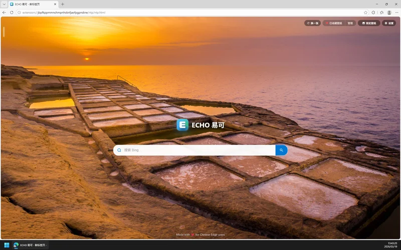
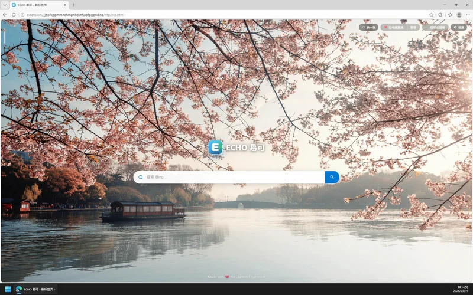
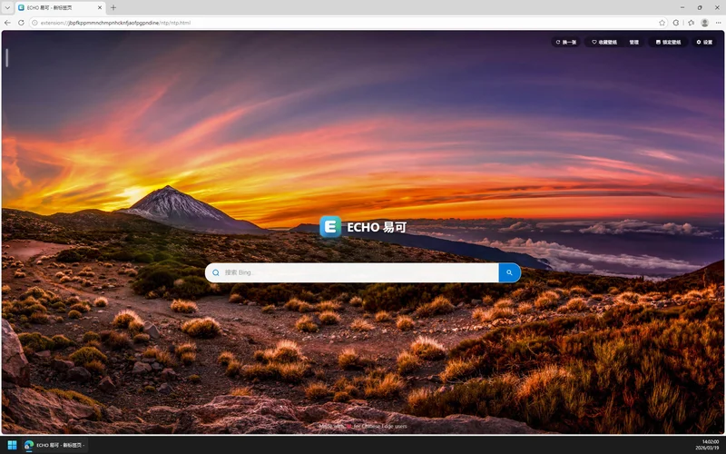
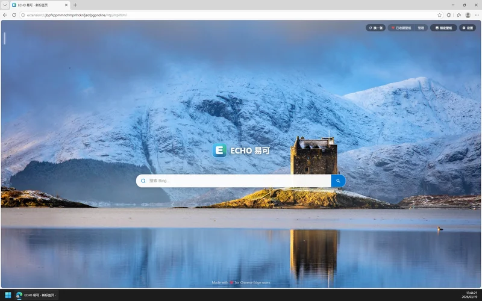
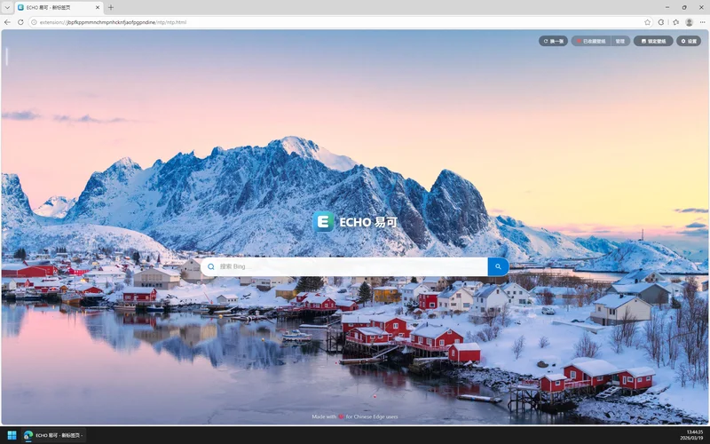
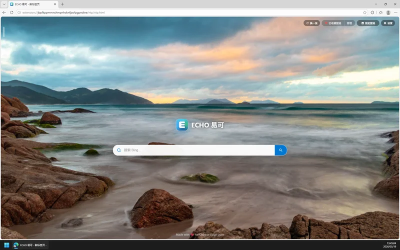
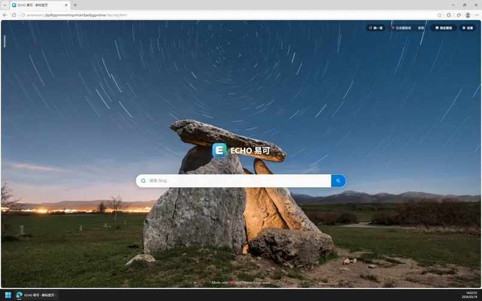
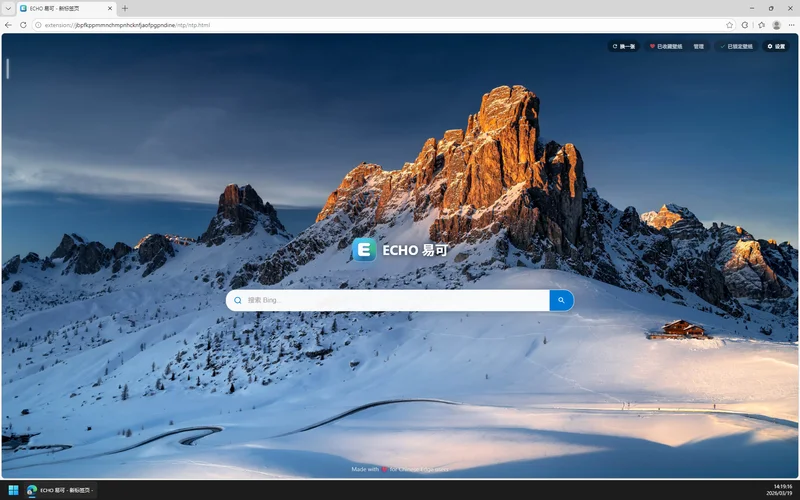
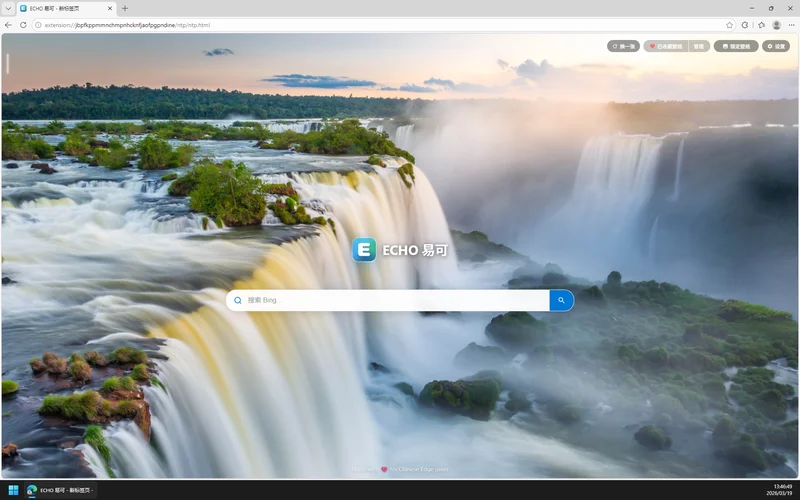
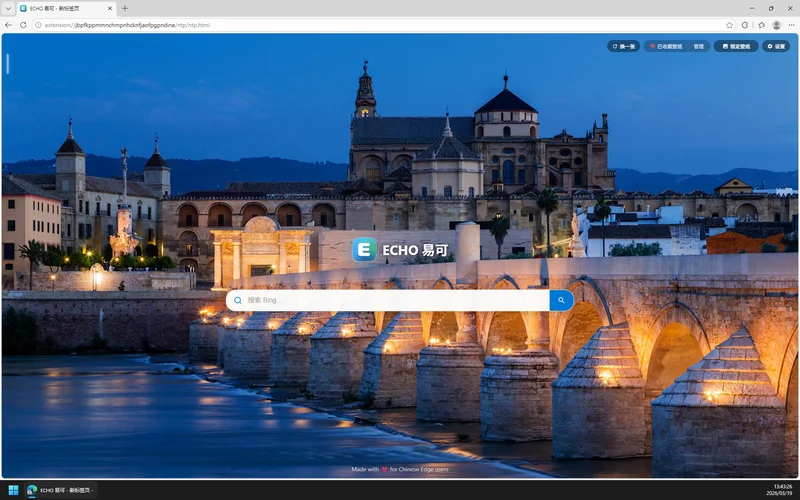

打开新标签，每次都喜欢
同步 Bing 每日壁纸 · 1000+ 张精选壁纸库 · 支持自定义和纯空白页










呼之即出，以快速搜索
Ctrl + B 一键唤起搜索框 · 边看边输入 · 回车直接搜
Enter 搜索 · Esc 关闭
×
更多便捷，延续你的操作直觉
从傲游、360、搜狗时代沉淀的肌肉记忆，无缝引入 Edge
超级拖拽搜索/打开
鼠标手势滚轮切换标签
Alt 一键存图
5% 精细缩放步进
F2/F3 切标签
老板键/一键静音
标签页行为高级控制
Ctrl+B 悬浮搜索
为什么做这个扩展？
Edge 在中国是市场占有率第一的浏览器，它拥有 Chromium 的先进内核、难得的体面与克制，以及微软持续投入的 AI 能力。
但全球化的体面也带来了一个缺憾：它很难完全俯身去适配每一个区域的肌肉记忆。从傲游开创多标签浏览开始，鼠标手势、超级拖拽、快捷存图、标签顺序……这些功能在十几年的国产浏览器竞争中被反复打磨，最终沉淀为数以亿计用户的本能反应。
我们不能要求一个国际化产品为每个区域逐一适配，也不应该要求用户放弃使用直觉去"重新学习"。最好的方式是双向奔赴——让浏览器更懂用户，也让用户更容易拥抱更好的浏览器。ECHO 试图解决的正是这个问题。这或许是一种小小的心系天下：不是抱怨"为什么不给我们做"，而是自己动手——为理解者建桥，为探索者点灯。
而 ECHO 本身也是一次碳硅融合的实践。这是一个几乎完全由 AI 编写代码、由人类定义方向的项目。作者是一个没写过生产级代码的 PM，但对中国浏览器市场有超过十年的行业经验。AI 负责穷尽实现的可能，人负责收敛选择的边界——用最前沿的生产力，去修复最朴素的体验摩擦。
常见问题
不是。ECHO 是一款用爱发电的个人饭制作品，与 Microsoft 或 Edge 团队无关。完全开源，所有代码可在 GitHub 上查看和审计。GitHub 版本发布通常略微早于扩展商店版本（商店审核周期约一周）。
ECHO 完全免费，没有任何广告、没有弹窗、没有赞助推荐或付费功能。现在不会有，以后也不会有。Again，ECHO 是一款用爱发电的个人饭制作品。
绝对不会。要实现全局的超级拖拽和手势，扩展必须在网页里注入运行脚本，所以需要网页读取权限。但所有核心功能完全基于本地运行，不上传任何浏览历史或数据。唯一的网络功能（AI 关联搜索）默认关闭，开启也是完全匿名调用，无用户标识。代码开源，欢迎随时审计。
市面上不缺单一功能的扩展——做手势的、做新标签页的各有几个。但把鼠标手势、超级拖拽、精细缩放等十几项交互完整组装且全部能独立开关，ECHO 第一个这样做。更重要的是，这不是简单的功能堆砌，而是完全按照国内老网民在傲游、360时代沉淀的“肌肉记忆”去精心调校的。
所有功能都支持独立开关。点击工具栏中的 ECHO 图标打开设置页，只启用你需要的功能即可。不开的功能绝对不会在后台加载，做到真正的零额外资源占用。
出于 Edge 浏览器的官方安全机制，所有扩展都无法在内部设置页（edge:// 开头）、微软扩展商店以及受保护的空白页上运行。这是浏览器的底层限制，并非扩展失效。另外，如果您同时开启了别的同类手势扩展，可能会引起冲突，建议只保留一个生效。